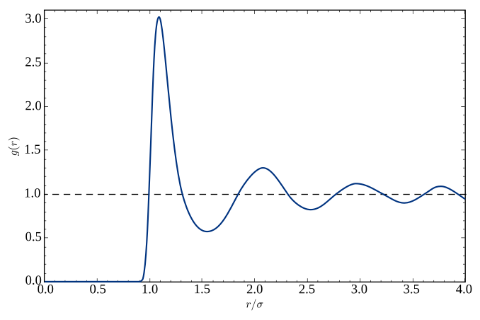
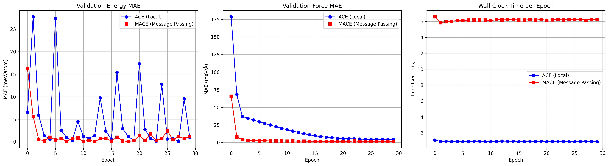
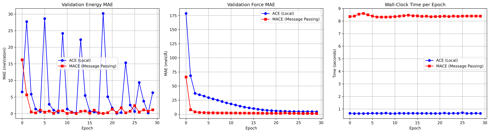
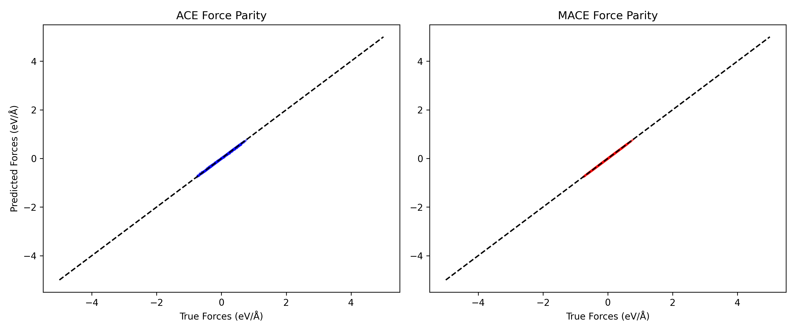
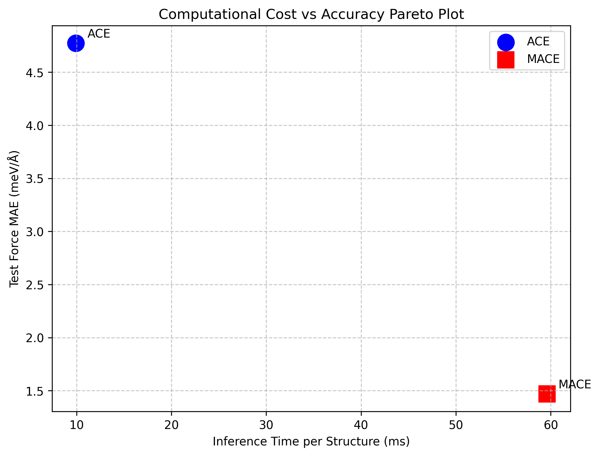
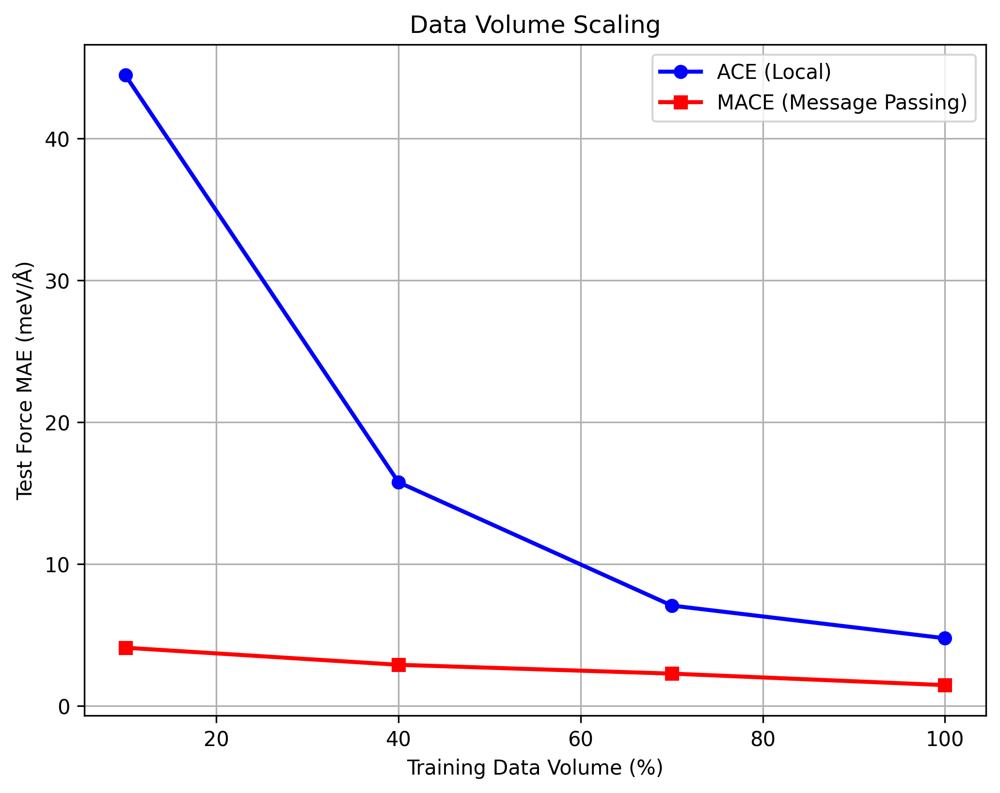

Evaluating analytical atomic force predictions for Molecular Dynamics.
Since the CGCNN model struggled with predicting directional vectors (like atomic forces), the second part of this project focused on testing out newer, more advanced models. When you run a Molecular Dynamics (MD) simulation, you need to know exactly which direction and how hard every single atom is being pushed at every timestep. To get that force vector, the model has to calculate the spatial derivative of the energy (\(F = -\nabla E\)).
For this phase, I set up a benchmarking pipeline to compare two of the main approaches used today: Atomic Cluster Expansion (ACE), which uses localized math, versus MACE, which uses equivariant message passing.
The benchmarking models were based on the following literature and resources:
Before diving into the code, I had to figure out why predicting forces is so much harder than predicting energy.
Energy is a scalar, meaning it's just a single number. No matter how you rotate a crystal, its total energy stays the same. But Force is a vector; it has a magnitude and a specific 3D direction. To get the force, we have to take the derivative of the energy with respect to the atom's position (\(F = -\nabla E\)).
This brings up a huge mathematical headache called Equivariance. If I rotate a molecule by 90 degrees, its energy doesn't change (Invariant), but the force arrows pointing off the atoms need to rotate by exactly 90 degrees too (Equivariant). Standard networks like CGCNN just pass around scalar distances, so they have no idea which way is "up" or "down" when the molecule rotates.

Atomic Cluster Expansion (ACE) is an optimized mathematical framework designed to create local descriptors of atomic environments. Instead of relying on iterative neural network layers, ACE evaluates a static descriptor for each central atom by analyzing its neighbors within a strict geometric cutoff radius (e.g., 5.0 Å).
ACE builds its descriptor by systematically expanding the atomic environment into a complete basis set. It characterizes interactions based on body-order, effectively counting how many atoms are interacting simultaneously:
However, extending ACE to higher body orders (like 5-body or 6-body) causes a massive combinatorial explosion in computational cost. Therefore, ACE usually truncates at lower orders. Because ACE computes these truncated descriptors in a single, localized mathematical pass without deep graph routing, it achieves very high computational efficiency, making it highly suitable for fast Molecular Dynamics simulations.
MACE (Message Passing Atomic Cluster Expansion) merges the rigorous, body-ordered descriptors of ACE with the dynamic routing of a Graph Neural Network. While ACE is strictly limited to the atoms within its immediate cutoff radius and truncated at lower body orders, MACE bypasses this combinatorial explosion through Iterative Message Passing.
By passing a 3-body message to a neighbor, and then passing that message again to another neighbor, MACE effectively creates a 5-body correlation without ever having to calculate it directly. This significantly expands the receptive field and the effective body-order of each atom.
Maintaining O(3) Equivariance: As the model passes these complex geometrical messages, it must ensure that the predicted force vectors rotate correctly if the entire molecule rotates. To accomplish this, MACE utilizes mathematical operations from quantum mechanics known as Clebsch-Gordan tensor contractions during its message passing layers.
This mathematically preserves the O(3) equivariance of the geometric features, allowing MACE to achieve highly accurate vector predictions, though at the expense of a higher computational overhead compared to ACE.
The directory structure and PyTorch Geometric workflow were set up with assistance from AI tools. The following prompts were used during development:
The project was organized into modular directories (`src/dataset.py`, `src/models/`, `src/trainer.py`) accompanied by a Jupyter Notebook workflow. Below is a walkthrough of the files.
src/dataset.py)Molecular Dynamics trajectories are simulated within bounded boxes. The graph implementation must account for Periodic Boundary Conditions (PBC) so atoms at the edge of the box correctly bond with atoms on the opposite edge.
# Excerpt from src/dataset.py
import torch
import ase.neighborlist
import numpy as np
def build_pbc_graph(atoms, cutoff=5.0):
# Extract PBC-aware indices & shift vectors via ASE
i_idx, j_idx, shift_vectors = ase.neighborlist.neighbor_list("ijS", atoms, cutoff)
edge_index = torch.tensor(np.vstack([i_idx, j_idx]), dtype=torch.long)
# Store fractional shifts for distance calculations
cell = torch.tensor(atoms.get_cell()[:], dtype=torch.float32)
# This shift matrix corrects distances across box boundaries
edge_shift = torch.tensor(shift_vectors, dtype=torch.float32) @ cell
return edge_index, edge_shift
src/trainer.py)A unified trainer class was written to benchmark both models. Unlike standard evaluation loops which use @torch.no_grad(), this implementation requires gradients to be tracked in order to compute the spatial derivative of Energy for determining Forces.
# Excerpt from src/trainer.py
import torch
class UnifiedTrainer:
# Evaluation requires gradients to compute forces
def evaluate_loader(self, loader, prefix="val"):
self.model.eval()
total_e_loss, total_f_loss = 0, 0
for batch in loader:
batch = batch.to(self.device, non_blocking=True)
# Forward pass: must require grad on positions
batch.pos.requires_grad_(True)
# Predict Energy
pred_energy = self.model(batch)
# Analytically derive Forces: F = - dE / dR
pred_forces = -1 * torch.autograd.grad(
outputs=pred_energy,
inputs=batch.pos,
grad_outputs=torch.ones_like(pred_energy),
create_graph=True,
retain_graph=True
)[0]
# Calculate errors
e_loss = self.criterion_e(pred_energy, batch.energy)
f_loss = self.criterion_f(pred_forces, batch.forces)
01_Data_Preparation.ipynb)Input: Raw `.extxyz` Molecular Dynamics trajectory files.
Output: Fractional data splits (10%, 40%, 70%, 100%) formatted as PyTorch Geometric datasets.
This notebook parses the trajectory frames and extracts atomic positions, forces, and energies. Crucially, it splits the dataset into varying sizes to allow for benchmarking how model accuracy scales with available training data.
# Excerpt from 01_Data_Preparation.ipynb
import ase.io
from torch_geometric.data import Data
def parse_trajectory(extxyz_path, split_ratio):
frames = ase.io.read(extxyz_path, index=":")
subset_size = int(len(frames) * split_ratio)
dataset = []
for frame in frames[:subset_size]:
# Extract atomic properties
pos = torch.tensor(frame.get_positions(), dtype=torch.float32)
forces = torch.tensor(frame.get_forces(), dtype=torch.float32)
energy = torch.tensor([frame.get_potential_energy()], dtype=torch.float32)
# Build PBC graph (utilizing the function from dataset.py)
edge_index, edge_shift = build_pbc_graph(frame)
dataset.append(Data(pos=pos, forces=forces, energy=energy,
edge_index=edge_index, edge_shift=edge_shift))
return dataset
02_ACE_Training.ipynb)Input: Processed PyTorch Geometric datasets.
Output: Trained ACE model weights (`.pth`) and logged training metrics (`.csv`).
This notebook handles the initialization and training of the localized ACE model. A critical implementation detail here was using `SiLU` (Swish) activations. Because forces are calculated via the spatial derivative of the energy, a continuously differentiable activation function like SiLU is required to prevent jagged, discontinuous force predictions that would occur with standard ReLU.
# Excerpt from 02_ACE_Training.ipynb
import torch.nn as nn
from src.trainer import UnifiedTrainer
# Defining the ACE Network with SiLU for continuous derivatives
class ACEModel(nn.Module):
def __init__(self):
super().__init__()
self.radial_basis = RadialBasis(cutoff=5.0)
self.angular_basis = SphericalHarmonics(l_max=3)
# SiLU is crucial here for smooth Force (gradient) calculation
self.mlp = nn.Sequential(
nn.Linear(128, 64),
nn.SiLU(),
nn.Linear(64, 1)
)
# Initialize trainer with composite loss (Energy + Force)
trainer = UnifiedTrainer(
model=ACEModel(),
criterion_e=nn.MSELoss(),
criterion_f=nn.MSELoss(),
energy_weight=0.2, # Scale to balance numerical gradients
force_weight=0.8
)
03_MACE_Training.ipynb)Input: Processed PyTorch Geometric datasets.
Output: Trained MACE model weights (`.pth`) and logged training metrics (`.csv`).
This notebook sets up the MACE network, utilizing the `e3nn` library to maintain O(3) equivariance. The core architectural difference here is the use of Tensor Products to couple the spherical harmonic features, ensuring that the predicted forces transform correctly if the crystal geometry rotates.
# Excerpt from 03_MACE_Training.ipynb
from e3nn import o3
from src.trainer import UnifiedTrainer
class MACELayer(nn.Module):
def __init__(self, irreps_in, irreps_out):
super().__init__()
# Irreps mathematically define how features transform under 3D rotation
self.irreps_in = o3.Irreps(irreps_in)
self.irreps_out = o3.Irreps(irreps_out)
self.irreps_sh = o3.Irreps("1x0e + 1x1o + 1x2e") # Spherical Harmonics
# Clebsch-Gordan Tensor Product to maintain Equivariance
self.tp = o3.FullyConnectedTensorProduct(
self.irreps_in, self.irreps_sh, self.irreps_out
)
# Initialize trainer for MACE (using identical loss scaling as ACE for fairness)
trainer = UnifiedTrainer(
model=MACEModel(num_message_passing_layers=2),
criterion_e=nn.MSELoss(),
criterion_f=nn.MSELoss(),
energy_weight=0.2,
force_weight=0.8
)
04_Inference_Benchmark.ipynb)Input: Trained model weights and test dataset.
Output: Latency metrics (milliseconds per forward step).
This notebook isolates the computational cost of the models. It runs the evaluation loop strictly to measure the time taken to compute forces, providing the raw latency data needed to contrast ACE's speed with MACE's accuracy.
# Excerpt from 04_Inference_Benchmark.ipynb
import time
import numpy as np
def benchmark_latency(model, dataloader, num_runs=50):
latencies = []
model.eval()
for i, batch in enumerate(dataloader):
if i >= num_runs: break
batch = batch.to('cuda')
batch.pos.requires_grad_(True)
# Start timer right before the physics computation
start_time = time.perf_counter()
# Forward pass and gradient tracking
energy = model(batch)
forces = torch.autograd.grad(
outputs=energy, inputs=batch.pos,
grad_outputs=torch.ones_like(energy)
)[0]
end_time = time.perf_counter()
latencies.append((end_time - start_time) * 1000) # convert to ms
print(f"Average Latency: {np.mean(latencies):.2f} ms/batch")
05_Results_Comparison.ipynb)Input: Logged metrics from notebooks 02, 03, and 04.
Output: Final benchmarking graphs (Parity plots, Data scaling curves, Cost vs Accuracy).
The final notebook aggregates all the CSV logs generated by the training and benchmarking phases. It utilizes Matplotlib to generate the visual comparisons that form the basis of the conclusions drawn in this project.
# Excerpt from 05_Results_Comparison.ipynb
import matplotlib.pyplot as plt
import pandas as pd
# Load logged force MAE across different fractional data splits
df_ace = pd.read_csv('ace_scaling_metrics.csv')
df_mace = pd.read_csv('mace_scaling_metrics.csv')
plt.figure(figsize=(8, 6))
# Plotting the scaling performance
plt.plot(df_ace['dataset_size'], df_ace['force_mae'], marker='o', label='ACE')
plt.plot(df_mace['dataset_size'], df_mace['force_mae'], marker='s', label='MACE')
plt.xlabel("Dataset Size (%)")
plt.ylabel("Force MAE (eV/Å)")
plt.title("Force Accuracy vs Data Scaling")
plt.legend()
plt.grid(True, alpha=0.3)
plt.show()
Developing a framework to compute analytical derivatives presented several challenges that required manual debugging and resolution.
An initial evaluation loop used the standard @torch.no_grad() decorator commonly used for inference. Because the target variable (Atomic Force) requires calculating the spatial derivative of energy, disabling gradients caused the evaluation loop to fail.
# Disables autograd graph, causing force derivation to fail
@torch.no_grad()
def evaluate(model, batch):
energy = model(batch)
# Crashes: element 0 of tensors does not require grad
forces = torch.autograd.grad(energy, batch.pos)[0]
# Explicitly track gradients on atomic positions
def evaluate(model, batch):
batch.pos.requires_grad_(True) # Enable tracking
energy = model(batch)
# Successfully computes analytical forces
forces = torch.autograd.grad(
outputs=energy, inputs=batch.pos,
grad_outputs=torch.ones_like(energy), create_graph=True
)[0]
An early attempt calculated atomic neighbors using a simple Euclidean distance matrix. This approach is invalid for MD simulations as it ignores Periodic Boundary Conditions (PBC), leaving atoms at the cell boundaries completely disconnected from their mirrored neighbors.
# Naive Euclidean distance ignores simulation boundaries
def get_neighbors(positions, cutoff=5.0):
# Calculates distances strictly within the primary cell
dist_matrix = torch.cdist(positions, positions)
edge_index = (dist_matrix < cutoff).nonzero().t()
return edge_index
# Utilizes ASE to correctly map periodic shift vectors
import ase.neighborlist
def get_neighbors(atoms_object, cutoff=5.0):
# 'S' extracts the periodic shift vectors for cross-boundary bonds
i, j, S = ase.neighborlist.neighbor_list("ijS", atoms_object, cutoff)
edge_index = torch.tensor([i, j])
edge_shift = torch.tensor(S)
return edge_index, edge_shift
Because Energy (Scalar) and Force (Vector Array) have radically different numerical scales, the initial model weights became imbalanced. The network heavily prioritized minimizing the larger Force error and neglected the Energy error.
# Unweighted composite loss
energy_loss = mse(pred_energy, true_energy)
force_loss = mse(pred_forces, true_forces)
# Gradients dominated by force_loss magnitude
total_loss = energy_loss + force_loss
total_loss.backward()
# Weighted composite loss balances the gradient descent
energy_loss = mse(pred_energy, true_energy)
force_loss = mse(pred_forces, true_forces)
# Coefficients dynamically balance the optimization targets
energy_weight = 0.2
force_weight = 0.8
total_loss = (energy_weight * energy_loss) + (force_weight * force_loss)
total_loss.backward()
Running the baseline models on a local GPU (RTX 3050, 4GB VRAM) highlighted hardware limitations. Moving the training to Kaggle instances with larger GPUs (T4, 16GB VRAM) resolved memory constraints and improved training speeds.


Observations from Hardware Profiling:

Observations from Parity Plots:

Observations from Inference Cost:

Observations from Data Scaling:
Running these benchmarks really put things into perspective. ACE is incredibly fast because it only looks at the immediate neighbors and doesn't bother passing messages around the whole graph. If you just need a quick and dirty MD simulation, ACE is definitely the way to go.
On the flip side, MACE is incredibly accurate. Because it uses equivariant message passing, it actually understands the 3D geometry of the forces. The only downside is that it is quite slow. In my tests, it took about 6 times longer to run than ACE.
Ultimately, there's no perfect model. You just have to pick what matters more for your specific project: do you need it done fast (ACE), or do you need it done right (MACE)?